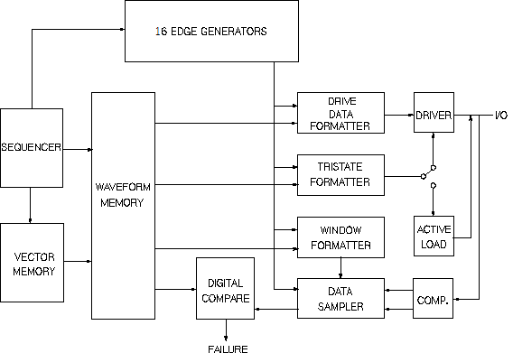

Description of the Timing System
The figure below shows the block diagram of the timing system hardware. The hardware lets you program the timing on a per-pin basis.

- Device cycles are made up of waveforms in test system cycles.
- Waveforms are made up of actions occurring at edges.
- Edges are positioned at a delay measured from the start of a test system cycle.
Functional changes
- Introduced before SmarTest 6.3.2